Chapter 1.6-Powers of Rational Number
Equation for Investment and Earning:

Equation for Investment and Earning:
Volume of a cylinder:

Area of a Square:

Volume of a Cube:
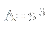Equation of a straight line:
Equation for calculating the slope:
Standard form Equation:

The formula for the surface area of a square-based prism:
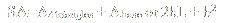The formula for the surface area of a cone:
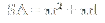Volume of a pyramid:
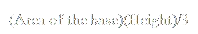Volume of a cone:

Equation of a straight line or slope form:
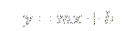Standard form:
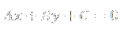Midpoint of a line:
Distance between two points:
Equation of a circle:
Quadratic equation-Standard form:
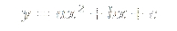Quadratic equation-Factored form:
Whole square(Addition):
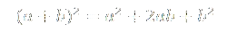Whole square(Subtraction):
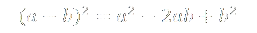Difference of squares::
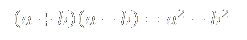Quadratic equation-Vertex form:
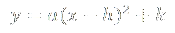Quadtratic equation-zeroes:
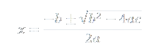Primary trigonometric ratios-Sine:
Primary trigonometric ratios-Cosine:
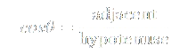Primary trigonometric ratios-Tangent:
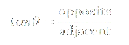Sine law:
Cosine law(1):
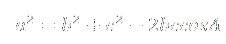Cosine law(2):
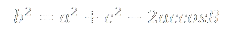Cosine law(3):
Linear Function Form::
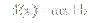General Function Form:
Factorable trinomial form:
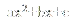Polynomials that can be factored as difference of squares:
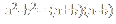Polynomials that can be factored as a perfect square:
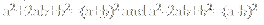Quadratic Formula:
Multiplying powers with the same base:
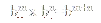Dividing powers with the same base:
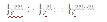To raise a power to a power, multiply exponents:
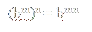Exponential Function form:
Function involving exponential growth:
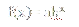

General term of Arithmetic Sequence:
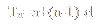Recursive Formula of Arithmetic Sequence:
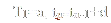General term of Geometric Sequence:
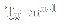Recursive Formula of Geometric Sequence:
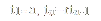Sum of first n terms in an arithmetic series:
Sum of first n terms in an geometric series:
Simple interest:
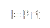Total amount of an investment earning simple interest:
future value of an investment earning compound interest:
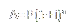Compound Interest:

Present value of an investment earning compound interest:

Transformations of a point:

Average Rate of Change(1):

Instantaneous rate of change:

Speed:

Remainder theorem:

Sum of cubes:

Difference of cubes:

Average rate of change (2):

Vertical Asymptopes:

Horizontal Asymptopes:

Radian measure-degrees to radians:

Radian measure-degrees to degrees:

Secondary trigonometric ratios-cosecant:

Secondary trigonometric ratios-secant::

Secondary trigonometric ratios-cotangent:

Addition Identites-sine:

Addition Identites-Cosine:

Addition Identites-Tangent:

Subtraction Identites-Sine:

Subtraction Identites-Cosine:

Subtraction Identites-Tangent:

Double Angle identites-Sine:
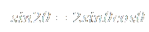Double Angle identites-Cosine:

Double Angle identites-Tangent:

Seconday Trigonometric Ratios-Cosecant:

Seconday Trigonometric Ratios-secant:
Seconday Trigonometric Ratios-Cotangent:(1)
Primary Trigonometric Ratios-Tangent:

Seconday Trigonometric Ratios-Cotangent(2):
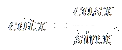Pythagorean Trigonometric Identity:
Logarithmetic of Multiplication:
Logarithmetic of Division:
Logarithmetic of a Power:
Addition of two Functions:
Subtraction of two Functions:
Multiplication of two Functions :
Division of two Functions :
Dimensions of a Matrix with m rows and n columns:
Approximate mean of a set of data that has been grouped into intervals:
Standard deviation of a population:
Standard deviation of a sample:
Variance of Population:

Variance of Sample:
Number of standard deviations that a datum is from the mean for a population:
Number of standard deviations that a datum is from the mean for a sample:

Correlation Coefficient (covariance of two variables in a sample):
Correlation Coefficient with respect to standard deviations for X and Y:
Equation for line of best fit:
Coefficient of Determination (r^2):
To find the factorial of a number:
To find a permutation of n distinct items:
To find the number of permutations of r items taken from n distinct items is:
The number of permutations of a set of n objects containing a identical objects of one kind, b identical objects of a second kind, c identical objects of a third kind, and so on is :
Pascals Triangle: Each term is equal to the sum of the two adjacent terms in the row immediately above:
Pascals Triangle: The sum of the terms in row n of Pascals triangle is:
To find the number of items in the union of two sets (derived from principle of inclusion and exclusion):
The number of combinations of n distinct objects taken r at a time is denoted as :
To find the total number of selections of at least one item that can be made from p items of one kind, q of a second kind, r of a third kind (and so on), use :
The number of subsets (including the null set) of a set with n distinct elements is:
Pascals Formula:
The Binomial Theorem:
The degree of each term in the binomial expansion of (a + b)n is:

The theoretical probability of an event A where n(A) is the number of outcomes making up A, n(S) is the total number of outcomes in the sample space S, and all out comes are equally likely to occur is :
If the probability of event A is given by P(A), then the probability of the complement of A is given by:
The odds in favour of an event A are given by the ratio:
The odds against an event A are given by the ratio:
If the odds in favour of A make a rational number h/k:
If A and B are independent events, then the probability of both occurring is given by :
If event B is dependent on event A, then the conditional probability of B given A is :
If event B is dependent on event A, the probability of both events occurring is given by:
If A and B are mutually exclusive events, then the probability of either A or B occurring is given by:
If A and B are non-mutually exclusive events, then the probability of either A or B occurring is given by:
The nth-step probability is given by:

Expectation, or the predicted average of all possible outcomes of a probability experiment is:
The outcomes of a uniform probability distribution (where n is the number of possible outcomes in the experiment) all have the same probability:
The probability of x successes in n independent trials (where p is the probability of success and q is the probability of failure on the same individual trial) is:
The expectation for a binomial distribution is:
The probability of success after a waiting time of x failures (where p is the probability of success in each trial and q is the probability of failure) is:
The expectation of a geometric distribution is:

Probability in a Hypergeometric Distribution:
Expectation for a Hypergeometric Distribution:
Exponential distribution:
Equation for z score:
To approximate mean deviation:
To approximate standard deviation:

Significance level:
Confidence level:
P% confidence interval for normally distributed data where a is the probability of error:
A P% confidence interval for a population proportion, based on binomial data, is given by:
For a specified margin of error w, the required sample size is:
Instantaneous Rate of Change:
Limit of a function:
Limit of a sum of two functions:
Limit of a product of two functions:
Limit of a constant coefficient function:
Limit of a quotient function:
Limit of a root function:
Derivative of a function:
Power Rule:
Derivative of a constant:
Product Rule:
Quotient Rule:
Power Rule (Leibniz Notation):
Chain Rule:
Velocity and Acceleration for an Object Moving in a Straight Line with Position s(t):
Tangent Approximation:
Recursion Formula for Newton’s Method:
Second Derivative of a Function:
Pythagorean Identity:
Periodicity of a Cosine Function:
Periodicity of a Sine Function:
Symmetry of a Sine Function:
Symmetry of a Cosine Function:
Addition Identity (Cosine Function):
Addition Identity (Sine Function):
Complementary Identity (Cosine):
Complementary Identity (Sine):
Double Angle Identity (Cosine):
Double Angle Identity (Sine):
Fundamental Trigonometric Limit:
Derivative of Sine:
Derivative of Cosine:
Derivative of Tangent:
Derivative of Cotangent:
Derivative of Secant:

Derivative of Cosecant:

Multiplication of Two Same Base Powers:
Division of Two Same Base Powers:
Base to the Exponent of 0:
Power of a Power:
Logarithm:
Logarithm of Multiplication:
Logarithm of Division:
Logarithm of 1:
Logarithm of a power:
Power of a Logarithm:
Logarithm of a power (2):
Logarithm of:
Definition of e:
Definition of e (2):
Natural Logarithm:
Derivative of ln x:
e to the power of ln x:

ln of power with base e:
ln of e:
Derivative of a power with base e:
Derivative of a ln function: